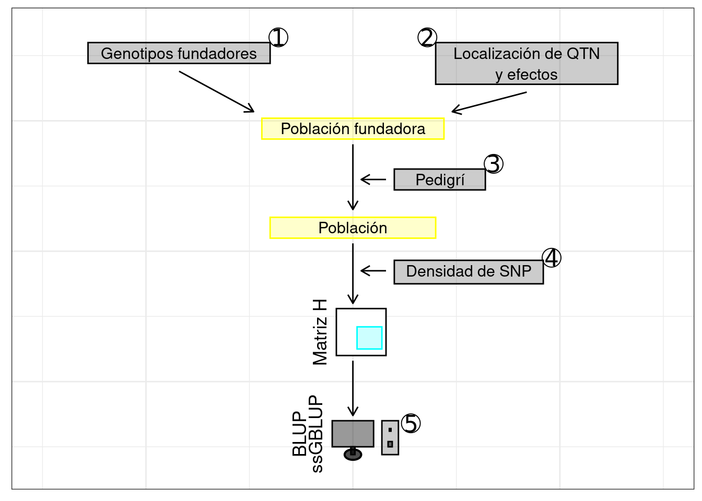
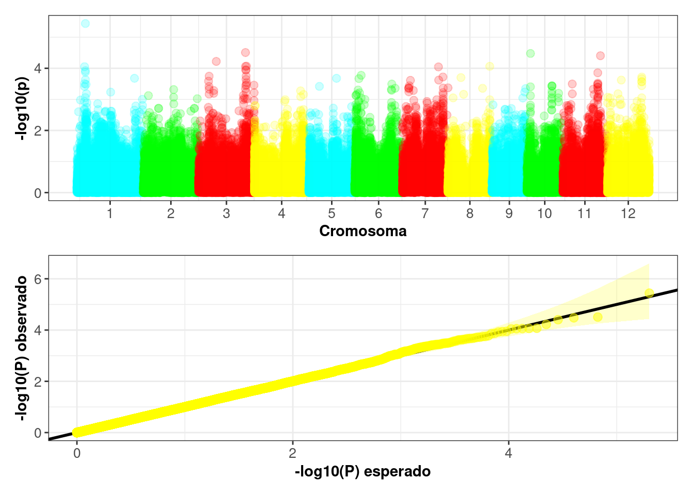

Precisión de la predición mediante simulación con SeqBreed
Hoy en día, los métodos de predicción genómica se usan ampliamente en la mejora genética de plantas y de animales. Antes de que estos métodos sean implementados en escenarios prácticos, es importante conocer su precisión al predecir el valor de cría estimado (EBV, o GEBV al realizar la predicción utilizando SNP). En este sentido, el objetivo principal de mi trabajo de grado consistió en estudiar el efecto del número de marcadores (SNP) y de individuos genotipados sobre la precisión del GEBV para el carácter tiempo de floración en el arroz. Para ello, se realizó un estudio de simulación a partir del uso del módulo SeqBreed (Pérez-Enciso, Ramírez-Ayala, and Zingaretti 2020) del lenguaje de programación Python(Van-Rossum and Drake 1995).
Cada uno de los pasos llevados a cabo en dicho estudio de simulación los describiré a continuación (Figure 1).

1. Uso de genotipos de la población fundadora
Para simular los datos de fenotipo y de genotipo se usaron los datos con los 100.231 SNP resultantes del control de calidad y que puede descargar en el capítulo donde se describen los datos. Luego, usando las funciones gg.GFounder() y gg.Genome(), como se puede observar en el código a continuación, se obtuvo un archivo que indicó el número de individuos genotipados o individuos de la población fundadora (451), la ploidía (2) y el número de SNP (100.231).
SNPs_pos = 'SNP_pos'
Gen_Pob_base = gg.GFounder(vcfFile = vcf_IND, snpFile = SNP_pos).
Gen_caracteristicas = gg.Genome(snpFile = SNPs_pos, mapFile = None, ploidy = Gen_Pob_base.ploidy, XChr = 'X', YChr = 'Y', MTChr = 'MT').
2. Especificación de la arquitectura genética (SNP causales (QTN) y sus efectos)
Se llevo a cabo inicialmente un estudio de asociación a nivel genómico (GWAS) usando el software GCTA(Yang et al. 2011), para identificar las regiones genómicas asociadas con el carácter tiempo de floración. A continuación podrá descargar el archivo que resultó al hacer el GWAS, el cual el efecto de los QTN y su localización.
Posteriomente, con base en el GWAS (Figure 2), se seleccionaron 50 QTN cuyo efecto era proporcional a la varianza aditiva explicada.

A continuación podrá descargar los 50 QTN seleccionados.
Por último, se uso la función gg.QTNs() sobre estos datos generados, indicando también la heredabilidad del carácter (0.7) de acuerdo a resultados previamente reportados (Vourlaki et al. s.f.).
QTN = 'QTN.txt'
QTN = gg.QTNs(h2 = [0.7], genome = Gen_caracteristicas, qtnFile = QTN)